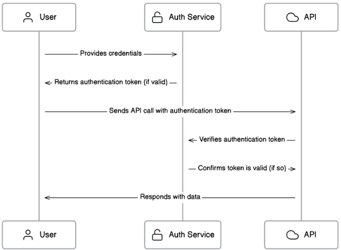
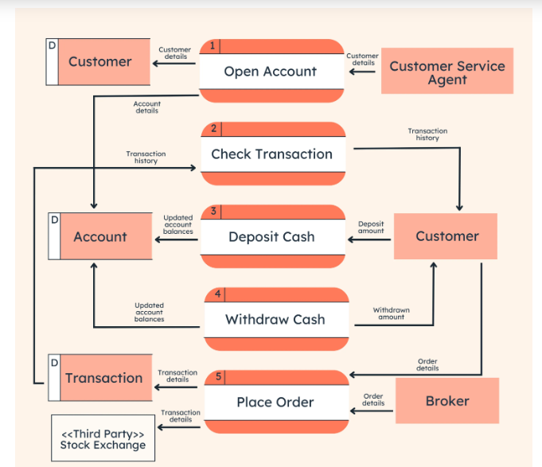
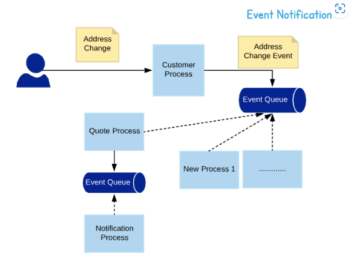
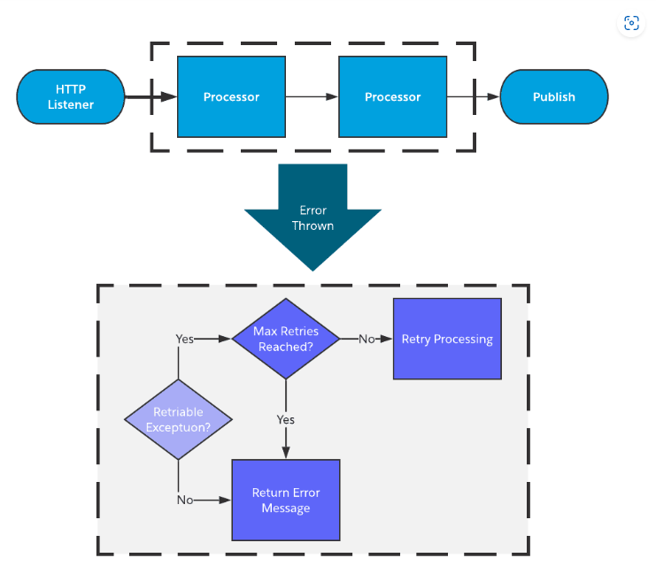

Process View
Description of the system's dynamic behavior, illustrating how the system's processes interact over time.
System Processes
The system's main processes include:
- User Authentication: Handling user login and access control.
- Data Processing: Managing and processing user data.
- Notification Service: Sending notifications and alerts to users.
- Reporting: Generating reports and analytics.
- Data Backup: Regularly backing up user data to ensure data integrity and availability.
- Error Handling: Detecting and managing errors to ensure system stability.
User Authentication Process
The following steps describe the user authentication process:
- User navigates to the login page.
- User enters their username and password.
- System verifies the credentials.
- If credentials are valid, user is redirected to the dashboard. Otherwise, an error message is displayed.

Data Processing Workflow
The data processing workflow involves the following steps:
- Data collection from user inputs or external sources.
- Data validation to ensure accuracy and completeness.
- Data storage in the database.
- Data retrieval and processing for generating reports or user display.

Notification Service
The notification service process includes:
- System monitors user activities and predefined conditions.
- When a condition is met, a notification is generated.
- Notification is sent to the user via email, SMS, or in-app alert.

Error Handling Workflow
The error handling workflow includes the following steps:
- System detects an error or exception.
- Error is logged for further analysis.
- User is notified of the error if necessary.
- System attempts to recover from the error or safely shut down affected components.
